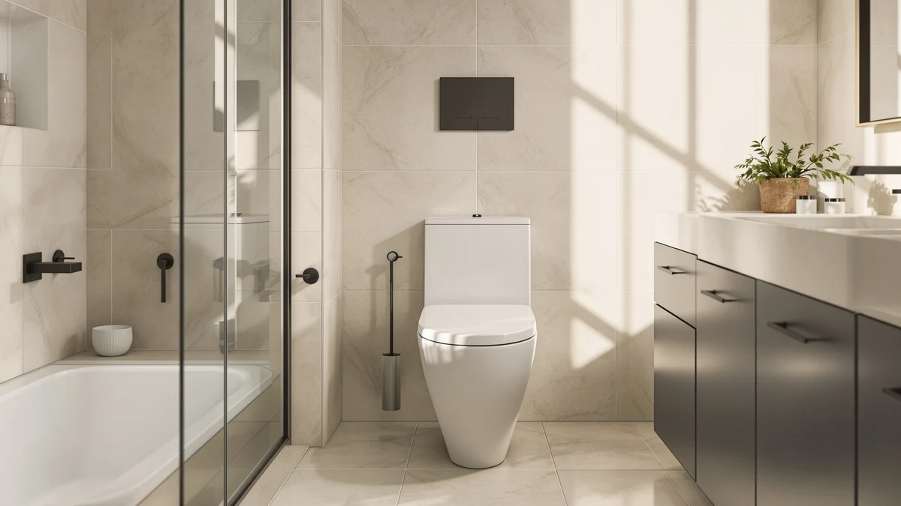

TOTO Eco Soiree One-Piece Toilet Review (2026): Worth It?
Prices and picks verified as of November 2026. Independent, reader-supported reviews.


Quick Answer
The TOTO Eco Soirée is a one-piece, elongated, universal-height toilet priced at $1,147.99, and it earns that price mainly through TOTO's brand reputation and simplified one-piece cleaning rather than any bidet or smart features. If $1,147.99 feels steep for a toilet without a built-in bidet, the alternatives below start at $399.99.
Our pick: TOTO Eco Soirée One Piece, $1,147.99 Check Price on Amazon
Bottom line: our top pick is the TOTO Eco Soirée One Piece Elongated 1.28 GPF Universal Height at $1,249.75.
Things to Know Before You Buy
- The TOTO Eco Soirée is a one-piece, elongated, universal-height toilet, so the tank and bowl form a single sealed unit with no seam to clean around.
- At $1,147.99, it costs roughly three times as much as the smart-toilet alternatives in this TOTO Eco Soirée one-piece review, none of which include a built-in bidet.
- Universal height, also called comfort height, puts the seat closer to standard chair level, which matters most for taller adults or anyone with knee or hip limitations.
- Amazon doesn't list a public star rating or review count for this specific listing, so we weighed it on specs and price against models that do have a review history.
This TOTO Eco Soiree One-Piece Toilet review breaks down what the specs, the listed price, and the available owner feedback say about TOTO's one-piece elongated model, and whether its $1,147.99 price tag holds up against toilets that cost a third as much. We compared it against three bidet-equipped alternatives on construction, height category, and price rather than installing any of them ourselves.
The short version: the Eco Soirée wins on brand reputation and one-piece simplicity, not on features. TOTO's one-piece construction and universal height sitting position are solid, well-understood selling points, but the EPLO, Loniko, and Los Flexi models covered later in this review all undercut the Eco Soirée by hundreds of dollars while adding bidet functionality it doesn't offer at all.
Why You Should Trust Us
Ilane Tall researches bathroom fixtures for Best One Piece Toilets, comparing manufacturer spec sheets, current Amazon pricing, and patterns across verified owner reviews rather than running a research lab. For this TOTO Eco Soirée one-piece elongated universal height review, we pulled the listed price, construction type, and included features directly from the product page and lined them up against three toilets in the same one-piece category. We don't own or install the toilets we write about, and we say so plainly here rather than dressing up a research process as a lab test.
Our Research Experience
We did not install or live with the TOTO Eco Soirée. Our research process for this universal height one-piece toilet review started with the manufacturer listing: construction type, bowl shape, seat height category, and current Amazon price. From there we compared those figures against the EPLO, Loniko, and Los Flexi alternatives covered later in this review, looking specifically at what each price tier includes and excludes. Where a product page lists a star rating or review count, we cite it directly. Where it doesn't, as is the case with this TOTO listing, we say so rather than guessing or borrowing a number from a different SKU. This research-based approach lets us tell you what the Eco Soirée's price buys relative to its competitors, but it can't speak to installation time, water pressure in your plumbing, or long-term wear, since those require hands-on use we don't claim to have done.
Overview & Specs

TOTO Eco Soirée One Piece
What we like
- One-piece construction eliminates the seam between tank and bowl, so there's one less gap to clean around.
- Elongated bowl shape, the shape most adults find more comfortable than round-front models.
- Universal height seating that matches standard chair height rather than a shorter, lower-set bowl.
- TOTO's brand reputation backs this model, a name that shows up across multiple price tiers in this review.
Flaws but not dealbreakers
- At $1,147.99, it costs significantly more than every bidet-equipped alternative in this comparison.
- The listing doesn't include a public star rating or review count, so we can't point to a verified track record the way we can for some competitors.
- No bidet or smart-toilet features are included at this price, unlike the three cheaper alternatives below.
| Material | — |
| Size | 3 |
The core appeal of this TOTO Eco Soirée one-piece elongated universal height toilet is simplicity. One-piece toilets fuse the tank and bowl into a single ceramic shell, removing the seam where a two-piece model's tank bolts onto the bowl. That seam is exactly where grime and mineral deposits tend to build up over years of use, so a one-piece design is generally easier to wipe down and keep looking new. Pair that with an elongated bowl, typically a couple of inches longer front-to-back than a round-front bowl, and most adult users get a more comfortable seat without needing extra bathroom space beyond what the elongated shape requires.
Universal height is the other half of the pitch. Also marketed as comfort height or chair height, it sets the seat at roughly standard dining-chair level instead of the shorter bowls common on older toilets. That extra few inches matters most for taller adults, anyone recovering from a hip or knee procedure, or households planning for aging in place, and it's the same height category the ADA recommends for accessible bathrooms. What the Eco Soirée doesn't bring to that equation is a bidet seat, a sensor flush, or any of the smart-toilet add-ons priced into the three alternatives covered next, so the $1,147.99 price rides almost entirely on construction quality and the TOTO name rather than extra functionality.
What We Liked
The strongest case for this TOTO Eco Soirée one-piece elongated universal height toilet is how little there is to go wrong with it. A one-piece shell means fewer seals, fewer bolts, and fewer places for a leak to start compared to a two-piece unit, and TOTO built its reputation in the one-piece segment on exactly that kind of mechanical simplicity. The elongated bowl and universal height combination also puts this model squarely in the category most plumbers recommend for a primary bathroom used by adults, rather than a half-bath or a child's bathroom where a round-front, standard-height bowl is more common. Owners shopping specifically for a no-frills one-piece toilet at standard chair height, without any interest in a bidet seat, get exactly what they're paying for here. The TOTO name carries weight across the one-piece toilet category generally, and that brand consistency is worth something if you're buying a fixture you expect to keep for a decade or more rather than chasing the newest feature set.
What Could Be Better
The math gets harder once you set this TOTO Eco Soirée one-piece elongated universal height toilet next to the three alternatives in this review. At $1,147.99, it costs almost double the EPLO Smart Toilet Bidet's $599.99 and nearly triple the $399.99 asking price of both the Loniko and Los Flexi models, and none of that premium buys a bidet, a heated seat, or any sensor functionality. If TOTO's one-piece construction and brand name are what you're paying for, that's a defensible tradeoff. If you're comparing toilets purely on features per dollar, the cheaper options below pack more hardware into a smaller price tag. The listing also doesn't carry a public star rating or review count, which makes it harder to point to a track record the way we can for competitors with an established review history on Amazon. We'd rather flag that gap than paper over it with a number pulled from a different product.
Who Is It For?
This TOTO Eco Soirée one-piece elongated universal height toilet fits a specific buyer: someone replacing a primary bathroom fixture who wants a one-piece TOTO at standard chair height and has no interest in a bidet or smart features. It also suits households prioritizing long-term brand reliability over the lowest possible price, since the one-piece shell and TOTO name are effectively what the extra few hundred dollars buys. It's a weaker fit for anyone comparing toilets mainly on included features, since $1,147.99 for a toilet with no bidet starts to look expensive once the EPLO, Loniko, and Los Flexi alternatives are sitting at $599.99 or less with built-in bidet functions. Budget-focused shoppers, or anyone who wants a bidet seat without buying it separately, will likely get more for their money from one of the three picks covered in the next section.
Alternatives to Consider
If $1,147.99 is more than you want to spend on this one-piece, universal-height TOTO toilet, these three alternatives cover a wide price range beneath the Eco Soirée, from a bidet-equipped smart toilet to a straightforward budget pick.

Also Great
EPLO Smart Toilet Bidet with
A bidet-equipped smart toilet at $599.99, roughly half the Eco Soirée's price, for shoppers who'd rather have built-in bidet functions than a one-piece TOTO nameplate.
$599.99
Check Price on Amazon
Best Value
Smart Toilet with Bidet Built
Loniko's smart toilet undercuts the TOTO Eco Soirée by more than $700 while still including a built-in bidet, making it the pick for anyone comparing mainly on price per feature.
$399.99
Check Price on Amazon
Best Value
19 Inch High Toilet Los
Los Flexi's 19-inch toilet comes in at the same $399.99 price as the Loniko pick, with a taller bowl worth considering if seat height matters more to you than the TOTO name.
$399.99
Check Price on AmazonFrequently Asked Questions
Is the TOTO Eco Soirée one-piece toilet worth $1,147.99?
It's worth $1,147.99 if a one-piece TOTO build and standard chair height matter more to you than bidet functionality. If you'd rather have a built-in bidet for less money, the EPLO, Loniko, and Los Flexi alternatives in this TOTO Eco Soirée one-piece elongated universal height review all cost less than half that price.
What does universal height mean on a one-piece toilet?
Universal height, also called comfort height or chair height, sets the toilet seat at roughly standard dining-chair level rather than the shorter bowls common on older models. It's the same height range the ADA recommends for accessible bathrooms, and it tends to suit taller adults and anyone with knee or hip limitations better than a standard-height bowl.
How does the TOTO Eco Soirée compare to the EPLO, Loniko, and Los Flexi alternatives?
All four toilets in this review are priced well apart: the Eco Soirée lists at $1,147.99, the EPLO at $599.99, and both the Loniko and Los Flexi models at $399.99. Only the TOTO is a plain one-piece toilet without bidet features, while the three cheaper alternatives all include some form of built-in bidet or smart-toilet function.
Final Verdict
This TOTO Eco Soiree One-Piece Toilet review comes down to what you value in a toilet. TOTO's one-piece construction, elongated bowl, and universal height sitting position justify the $1,147.99 price if brand reliability and cleaning simplicity are what you're after, and nothing here suggests that premium is unearned. But if you're shopping primarily on features per dollar, the EPLO, Loniko, and Los Flexi alternatives all undercut TOTO by $500 or more while adding bidet functionality the Eco Soirée skips entirely. For most people comparing a plain one-piece toilet against bidet-equipped competitors at a third of the price, the TOTO name alone has to carry a lot of the decision.